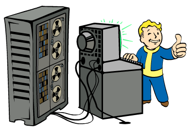
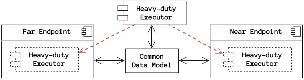
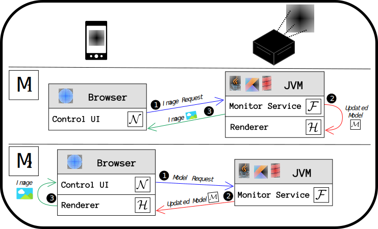
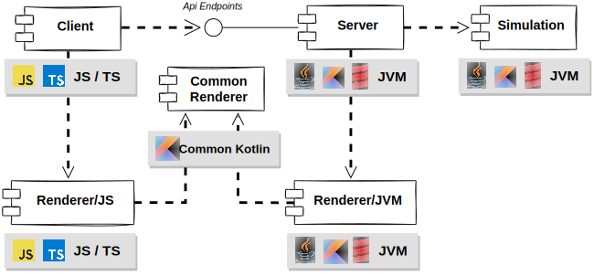
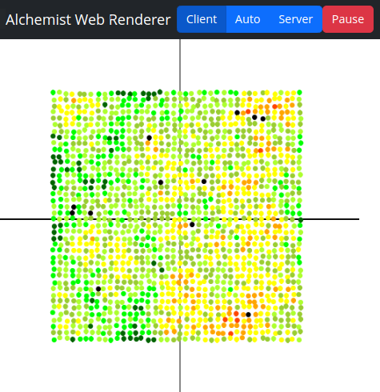
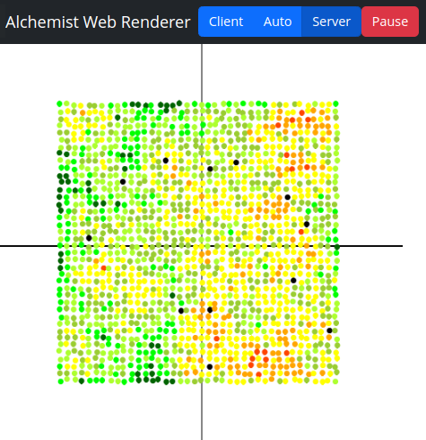
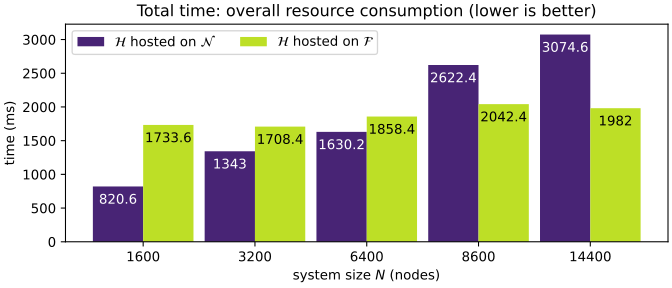
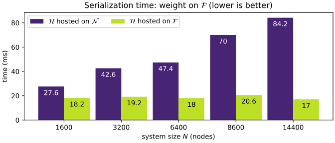
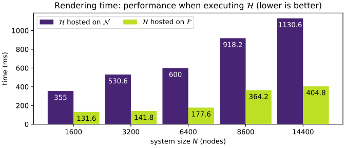
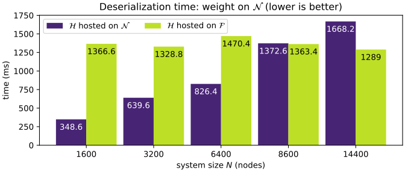

Runtime load-shifting of distributed controllers across networked devices
Danilo Pianini, Angelo Filaseta
@DAIS 2023, Lisboa




Summary
- Controlling and monitoring large situated systems can be computationally expensive
- Heterogeneity of devices impact both controllee and controller
- Workloads should be able to run on very different runtimes and hardware
- Heavy workloads impact negatively on performance and battery life
- Scaling up is not always possible
- And even when possible, it is often expensive
Instead of scaling, we want to shift the load at runtime, depending on the context, and across different runtimes!
Analogies
| System | Similarity | Difference |
|---|---|---|
| Load balancing in cloud systems | shifts computational load to optimize performance | assumes homogeneous (cloud) devices |
| Mobile code / mobile agents | computational load is designed to be moved across devices | available technologies assume a shared runtime/middleware |
| Cloud gaming | capable to run the same heavy workload as a local application or as a bidirectional stream | does not loadshift at runtime (requires shutdown and restart) |
Abstract architecture

Far Endpoint $\mathcal{F}$ – software component, usually non-local, that provides means to perform the primary operations required on the target system through a well-defined API;
Near Endpoint $\mathcal{N}$ – software component the user interacts directly with, hence, running on a device the user has direct access to, whose goal is to interact with the Far Endpoint;
Common Data Model $\mathcal{M}$ – a formal (and serialisable) description of the data exchanged among all the components of the system;
Heavy-duty Executor $\mathcal{H}$ – software module performing resource-intensive computational tasks; this is the component that can be executed and moved on either $\mathcal{F}$ or $\mathcal{N}$
Key idea
- Isolate $\mathcal{H}$ from the rest of the system;
- Encapsulate the data model in a serialisable shared format $\mathcal{M}$;
- Mediate all $\mathcal{N} \rightleftarrows{} \mathcal{F}$ interactions through $\mathcal{H}$ leveraging $\mathcal{M}$
- $\mathcal{N} \rightleftarrows{} \mathcal{M} \rightleftarrows{} \mathcal{H} \rightleftarrows{} \mathcal{M} \rightleftarrows{} \mathcal{F}$;
In short, the architecture struggles to isolate and minimize the part of code that needs to be moved.
Practical problem: how to move $\mathcal{H}$ across different runtimes?
Moving code around: strategies
Copy and enable
- every devices has a dormant instance of $\mathcal{H}$
- only one copy of $\mathcal{H}$ can be active at a time
- requires $\mathcal{H}$ to be stateless
- all state must be serializable and embedded into $\mathcal{M}$
- Relatively straightforward to implement when $\mathcal{H}$ natively has little or no state
- Better reactivity as only commands and state travel over the network
- Wastes resources to keep a copy of $\mathcal{H}$ on all devices
Mobile code
- $\mathcal{H}$ gets serialized and sent over the network
- Better flexibility as state and behaviour move together
- A single shared copy potentially enables runtime update injection
- How to preserve the integrity of the ongoing operation is an open problem though
- Harder to implement
- Potentially inferior reactivity as only commands and state travel over the network
Portability
| Approach | Pros | Cons | Notes |
|---|---|---|---|
| Shared tech/runtime | Portability guaranteed by the runtime | Portability limited to the portability of the runtime | No need of this architecture (becomes an overkill) |
| Porting | Each implementation can be optimized | Expensive development, expensive maintenance, error-prone, duplication | Notable examples exist, such as ioquake 3 |
| Multi-targeting | Single codebase as in the shared runtime | More complex build process, few technologies | Kotlin and Scala viable solutions |
Proof of concept
Showcase requirements
- Use incompatible platforms for $\mathcal{N}$ and $\mathcal{F}$
- Emulate multiple networked devices (non-trivial $\mathcal{H}$)
- Non-trivial workload moving across the incompatible platforms
Nice to have
- Software architecture allowing to reuse as much code as possible
- Large enough to make porting unfeasible
Proof of concept: target
 Alchemist
Alchemist
- Simulator for large-scale distributed systems
- Also presented in a DAIS tutorial in 2021
- JVM-based (written in Java, Kotlin, and Scala)
Proof of concept: architecture

| Logical Component | Alchemist Component | Platform |
|---|---|---|
| $\mathcal{M}$ | Simulator Model + New serialization surrogates | and |
| $\mathcal{F}$ | Simulator Engine + New server module | |
| $\mathcal{N}$ | Browser | |
| $\mathcal{H}$ | New rendering system | and |
Proof of concept: design

Proof of concept: demo
curl -sL https://bit.ly/dais-2023-loadshift | bash
 
Feel free to try it yourself :)
Requirements: Java 8+, Internet connection, a browser, curl, and bash
Proof of concept: performance analysis
   
Conclusion
- A novel architecture for moving workloads across heterogeneous runtimes
- Isolate the heavy load part
- Identify the shared model and make it serializable
- Mediate all interactions through the heavy load part and the shared model
- Either write multiple ports of the heavy load, or much better, use a multi-target build process
- The Proof of concept demonstrates feasibility
- The Performance Analysis suggests potentials benefits for heterogenuous systems and evolving contexts
Future work
- PoC integrated in the simulator, but way more work is needed to make it usable
- Investigation of autonomic dynamic load shift strategies
(question time unofficially supported by the mighty load-shift hamster)